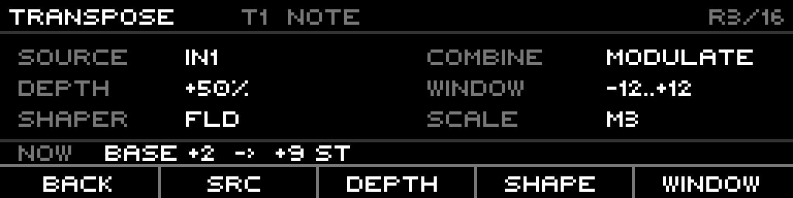

XFORMER Routing
The internal patchbay: wire any source (a CV input, a gate, a modulator, MIDI, a bus) to any target (tempo, octave, gate length, run/reset, almost any per-engine parameter), with depth, shaping, and per-track scope. This is how the eight tracks, the eight modulators, the CV/gate jacks and the outside world all talk to each other.
2 · Anatomy of a route
3 · Sources
4 · Targets
5 · Depth & Combine
6 · Shaper & Scale-source
7 · Track scope
8 · The CV bus & lanes
9 · Output rotation
10 · MIDI routing
11 · The matrix
＋ Proposed · the "door"
12 · Worked examples
1 · What routing is
A route is one modulation wire: it takes a source signal, normalizes it to 0–1, optionally
shapes it, scales it by a signed depth, and adds the result onto a target parameter —
for the tracks you choose. There are 16 routes total. A route is live as soon as its target isn't None.
2 · Anatomy of a route
The pieces, each editable per route:
| Part | What it is |
|---|---|
| Source | The input signal, normalized to 0–1 (§3). |
| Target | The parameter to drive (§4). One per route. |
| Depth | Signed amount, −100..+100%. Negative inverts. Per-track for per-track targets. |
| Combine | Modulate (bipolar, neutral at source 0.5) or Absolute (sweep from the base). §5. |
| Shaper | Optional fold/crease nonlinearity on the source. §6. |
| Scale-source | Optional: a second source that scales the depth — dynamic VCA on the route. §6. |
| Track scope | An 8-track mask (which tracks the route drives). Per-track targets only. §7. |
| Window | A min/max window inside the target's range; the source sweeps within it. |
3 · Sources
Anything that produces a value can be a source. All are normalized to 0–1 before depth is applied:
| Source | Count | Notes |
|---|---|---|
CV inputs IN1–4 | 4 | Physical CV jacks. Read through a per-route voltage range (Bi/Uni 5/10 V). |
CV outputs O1–8 | 8 | The track engines' own CV — feed an output back as a modulation source. |
CV busses B1–4 | 4 | Internal ±5 V busses (§8). Readable and writable. |
Gate outputs G1–8 | 8 | Binary 0/1 — a track's gate as a trigger/switch. |
Modulators M1–8 | 8 | The 8 modulators' 0–127 output (LFO/random/envelope/chaos/Geode). |
| MIDI | per route | An external CC / bend / note, configured + learnable per route (§10). |
4 · Targets
Almost any parameter is a target. They group by where they live:
Plus bus targets (write to BusCv1–4) and the output rotation targets (§9).
Each target has its own range and default window — e.g. Octave defaults to a ±1 window inside its
±10 range, so a full source sweep moves it one octave until you widen the window.
5 · Depth & Combine
Depth is a signed percentage (−100..+100). It scales the source's effect; negative flips the
direction. The Combine mode decides how the scaled source meets the parameter's base value:
Use Modulate for bipolar wiggle around a setting (an LFO around a transpose); Absolute for a pedal/knob that sweeps a parameter from its current value.
6 · Shaper & Scale-source
Shaper bends the source curve before depth: None, or a triangle fold
(FLD/F30/F70 — off-centre variants) or crease
(CRS/C10/C90). Folds turn a rising ramp into a there-and-back shape —
great for symmetric motion from a one-way source.
Scale-source is the clever one: a second source that multiplies the depth. Point it at an envelope
or another LFO and the route's strength breathes — a VCA on the modulation itself. Set to None for
constant depth.
7 · Track scope
Per-track targets drive a chosen set of tracks. In the matrix (§11) the eight tracks are columns, headed by
track number + engine letter (1N 2N 3C 4A 5T 6D 7P 8I — N=Note, C=Curve,
P=PhaseFlux, S=Stochastic, D=DiscreteMap, etc.).
Membership is implicit in the depth: a track is in the route when its cell has a non-zero depth; dial the depth to 0 and that track drops out. So one route can push tracks 1/3/5 by different amounts — each cell is its own depth. Global targets (tempo, swing, transport) ignore tracks entirely.
- T1–T8 — move the cursor to that track's column.
- Shift+Tn (while editing) — by-type spread: copy the cursor cell's depth to every track sharing track n's engine at once.
8 · The CV bus & lanes
Four internal CV busses (BusCv1–4, ±5 V) act as patch points: any route can
write to a bus (it's a target) and any route can read one (it's a source). Sum several routes onto a
bus, then read the bus once — a mult/mixer with no jacks. A route can't source and target the same bus
(no self-loop).
Separately, the CV-route has 4 lanes, each a flexible input→output crosspoint:
- Input: a physical CV-In, a bus, a modulator (Mod1–8), or Off.
- Output: a physical CV-Out, a bus, or None.
- Per-lane scan and route (depth) amounts — both routable targets themselves.
The BUS tab is a live hub for the four busses: each lane shows its current voltage (bar + value),
the one routing source + depth feeding it, and CVR / TT lights for whether the CV-router or Teletype
is writing it this frame. SAFE flags the bus-safety guard.

The BUS tab — B1 fed by IN1 +50% (CVR active), B3 empty (+ to add), B4 by G1 +100% (TT active).
9 · Output rotation
Two targets re-pattern the physical jacks as a group:
- GateOutputRotate / CvOutputRotate — the route's track mask defines a group; the source sets
a rotation amount over
−8..+8, and the group's jacks cycle: jack at position p sources member(p − N) mod K. Spin a whole drum group's gates with one CV. - CvOutputCrossfade — a continuous version: a float position blends/morphs CV between adjacent group members instead of hard-switching. in progress
10 · MIDI routing
MIDI is just another source — pick it on a route, and the external controller drives any target. Per route you set port (DIN/USB), channel (1–16 or omni), and event:
| Event | Maps to 0–1 as |
|---|---|
| CC absolute | CC value / 127. |
| CC relative | ±delta added to the current value. |
| Pitch bend | 14-bit bend / 16383. |
| Note momentary / toggle | Note on = 1 (momentary) or flips (toggle). |
| Note velocity | Velocity / 127. |
| Note range | A span of notes mapped across 0–1. |
The MIDI tab lists every MIDI-sourced route and lets you edit those fields, or LEARN — arm capture, wiggle a controller, and the incoming event is mapped automatically.
11 · The matrix
Open Routing and you land in one screen: a matrix of parameter rows × eight track columns. Each cell is one route's value for that parameter on that track. It's param-centric — you read down a column to see everything routed on a track, or across a row to see a parameter routed on every track.

The CLOCK tab in DEPTH view. Header: tab name · view · combine (MODULATE) ·
route counter (2/16). Columns = the 8 tracks (1N…8I), rows = parameters; cells show the depth
(+15, +100), M/A marks the route's combine. Footer: VIEW / EDIT.
The screen is organised into tabs (left/right): three parameter bands (PITCH / CLOCK / GLOBAL…), seven engine pages (NOTE / PHASEFLUX / CURVE / TUESDAY / DISCMAP / INDEXED / STOCH), then BUS and MIDI. A cell is editable only where the track's engine actually has that parameter.
| Control | Does |
|---|---|
| Encoder turn | Move the cursor row through the tab's parameters. |
| T1–T8 | Move the cursor to that track's column. |
| ← / → | Switch tab (band → engine → BUS → MIDI). |
| F1 VIEW | Cycle what the cells show: DEPTH → SOURCE → SCALE → SHAPER. |
| F2 EDIT | Enter/leave edit on the cursor row. |
| Encoder (editing) | Dial the cursor cell — depth, source, scale-source, or shaper, per the current view. |
| F3 COMBINE (editing) | Toggle Modulate ↔ Absolute for the row's route. |
| F4 CANCEL · F5 COMMIT | Discard or confirm the edit. |
| Shift+Tn (editing) | Spread the cursor cell's depth to all tracks of track n's engine. |
Four views (F1) read/edit a different field across the whole grid: DEPTH (the signed amounts —
this is also where membership lives, since a non-zero depth = the track is in the route), SOURCE (each route's
source token: IN1–4 / O1–8 / B1–4 / G1–8 / M1–8), SCALE
(the scale-source), and SHAPER (the fold/crease). The same grid, different field shown in every cell:

SOURCE — the source feeding each row (IN1, M1, B2).

SHAPER — the fold/crease per row (FLD, CRS).
The BUS and MIDI tabs swap the grid for their lane / learned-route lists.
Proposed · the param-detail "door" design
The matrix is great for an overview, but editing one route means hopping between the four views (DEPTH→SOURCE→SCALE→SHAPER) to see all its settings. A detail "door" would drill into a single cell — one (parameter, track) — and show the whole route on one screen. This screen does not exist in the firmware yet; it's a design proposal.

Proposed door for Note ▸ T1 ▸ Transpose: source, depth, combine, window, shaper, scale-source at a
glance, plus a live NOW readout (base + routed delta = applied value). Footer jumps straight to each field.
NOW line shows exactly what the route is doing to the parameter.12 · Worked examples
1 · CV pedal sweeps transpose on a chord group
Target TRANSPOSE · Source IN1 · Combine ABSOLUTE · Depth +50% · scope T1/T3/T5 —
an expression pedal slides three tracks up together from their base note.
2 · An LFO wobbles swing
Target SWING · Source M1 (slow Sine) · Combine MODULATE · Depth ±30% —
the groove breathes around 50% as the modulator swings.
3 · Envelope-gated modulation (scale-source)
Target CHAOS AMOUNT · Source M2 (random) · Scale-source M3 (ADSR) —
the random chaos only bites while the envelope is open — a VCA on the modulation.
4 · Sum two routes onto a bus, read once
Route A: IN1 → BusCv1. Route B: M1 → BusCv1. Route C: BusCv1 → OFFSET (T1–8)
— mix a CV and an LFO with no patch cables, then fan to every track.
5 · Rotate a drum gate group
Target GateOutputRotate · Source IN1 · scope T1–T4 — one CV spins which of the
four gate jacks carries which track — instant pattern variation.